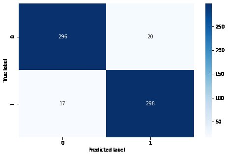
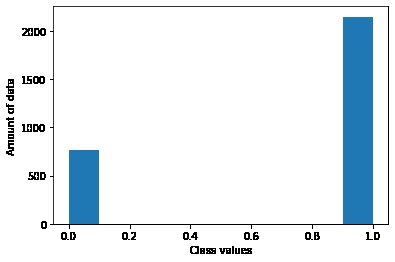

<div id="portfolio-page" class="portfolio-page-content">
    <div class="container">
        <div class="portfolio-nav">
            <div id="portfolio-close-button" class="portfolio-close-button">
                <a href="#portfolio"><i class="fa fa-close"></i></a>
            </div>
        </div>

        <div class="portfolio-title">
            <h1>Research Overview</h1>
        </div>

        <div class="row">
            <div class="col-sm-7 col-md-7 portfolio-block">
                <div class="owl-carousel portfolio-page-carousel">
                    <div class="item">
                        
                    </div>
                    <div class="item">
                        
                    </div>
                    <div class="item">
                        
                    </div>
                </div>

                <!-- <div class="portfolio-page-video embed-responsive embed-responsive-16by9">
                  <iframe class="embed-responsive-item" src="https://player.vimeo.com/video/97102654?autoplay=0"></iframe>
                </div> -->

                <!--
                <div class="portfolio-page-image">
                    
                </div>
                -->

                <script type="text/javascript">
                    jQuery(document).ready(function ($) {
                        $('.portfolio-page-carousel').owlCarousel({
                            smartSpeed: 1200,
                            items: 1,
                            loop: true,
                            dots: true,
                            nav: true,
                            navText: false,
                            margin: 10
                        });
                    });
                </script>
            </div>

            <div class="col-sm-5 col-md-5 portfolio-block">
                <!-- Project Description -->
                <div class="block-title">
                    <h3>ECG Heartbeat Classification Using Ensemble of Efficient Machine Learning Approaches on
                        Imbalanced Datasets.</h3>
                </div>
                <ul class="project-general-info">
                    <li>
                        <p><i class="fa fa-user"></i> <b>Md. Atik Ahamed</b>, Kazi Amit Hasan, Khan Fashee Monowar, Nowfel Mashnoor and Dr. Md. Ali Hossain</p>
                    </li>
                    <li>
                        <p><i class="fa fa-globe"></i> <a href="http://dx.doi.org/10.1109/ICAICT51780.2020.9333534"
                                target="_blank">DOI: 10.1109/ICAICT51780.2020.9333534</a></p>
                    </li>
                    <li>
                        <p><a href="https://www.researchgate.net/publication/348975016_ECG_Heartbeat_Classification_Using_Ensemble_of_Efficient_Machine_Learning_Approaches_on_Imbalanced_Datasets"
                                target="_blank"> ResearchGate</a> </p>
                    </li>
                    <li>
                        <p><i class="fa fa-calendar"></i>November, 2020</p>
                    </li>


                </ul>

                <p class="text-justify">
                    <b>Abstract</b>
                    <br>
                    Being electrocardiogram already an established method for analyzing cardiac health, it gained many
                    researchers' interests to classify heartbeats accurately. In spite of having numerous works in this
                    field, it still lacks obtaining high accuracy scores. In this paper, some well-known machine
                    learning approaches are used by tuning and compared with other state-of-the-art related
                    methodologies. The datasets are used in this research work, are highly imbalanced and handled with
                    penalizing the loss value of the Artificial Neural Network (ANN) by assigning class weights. Two
                    different enriched ECG datasets are selected for this research. They are MIT-BIH Arrhythmia which
                    contains five classes and PTB Diagnostic ECG which contains two classes. About 98.06% and 97.664%
                    accuracy are achieved with proposed approaches for MIT-BIH Arrhythmia and PTB Diagnostic ECG dataset
                    respectively. Both cases this research outperforms all the other state-of-the-art methodologies.
                </p>
                <!-- /Project Description -->

                <!-- Technology -->
                <div class="tags-block">
                    <div class="block-title">
                        <h3>Index Terms</h3>
                    </div>

                    <ul class="tags">
                        
                        <li><a>ECG</a></li>
                        <li><a>Deep   Learning</a></li>
                        <li><a>SVM</a></li>
                        <li><a>LSTM</a></li>
                        <li><a>ANN</a></li>
                        <li><a>Ensemble</a></li>
                        <li><a>AI</a></li>
                        <li><a>Machine  Learning</a></li>
                    </ul>
                </div>
                <!-- /Technology -->

                <!-- Share Buttons -->

                <!-- /Share Buttons -->
            </div>
        </div>
    </div>
</div>